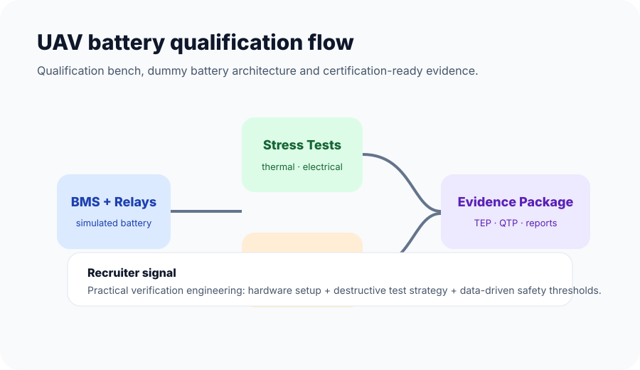

UAV Verification & Validation
UAV Battery Qualification Bench and Dummy-Battery Architecture
A qualification and acceptance testing workflow for UAV battery systems, including a simulated dummy-battery architecture to enable high-risk testing without damaging production batteries.
Summary
This work involved developing and realizing repeatable battery qualification and acceptance test bench setups for UAV battery systems. A key part of the work was creating a simulated “dummy battery” architecture using modified BMS and relay PCBs with external resistor-divider circuitry.
Challenge
Battery qualification involves destructive and high-risk test cases such as over-discharge and high-temperature validation. Production batteries should not be unnecessarily damaged during validation, while safety logic still needs realistic electrical behavior.
Approach
- Designed test bench workflows for repeatable qualification and acceptance testing.
- Built a dummy-battery architecture for destructive qualification tests.
- Executed battery characterization campaigns to identify critical voltage thresholds.
- Mapped State-of-Charge behavior for Immediate Landing and Return-to-Home safety logic.
- Prepared TEP/QTP/ATP-style documentation and verification reports for certification activities.
Recruiter takeaway
This project demonstrates hands-on system testing, electrical test setup thinking, safety-critical validation and the ability to turn lab results into certifiable engineering evidence.
Report availability
This is company work, so internal test data and full reports are not published. A public-safe summary is provided here, and additional cleared context can be discussed during interviews.

Discuss this work
Want to know how this experience maps to your role?
I can explain the technical details, trade-offs and public-safe project context in an interview.